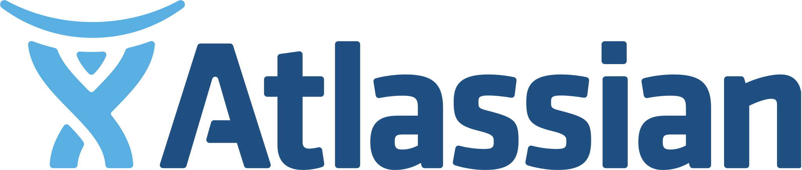
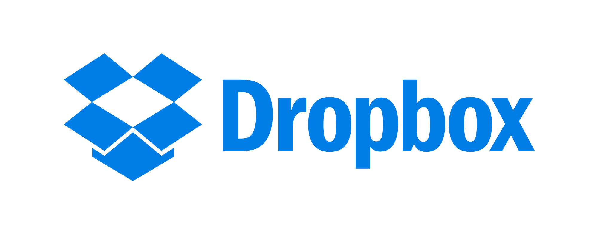

公式LINEで無料相談
公式LINEで無料相談
Claude Codeを導入している主な企業
各社が公表する一般事例（IZANAIの取引実績ではありません）
業務の文脈を理解し、ファイルを読み解き、タスクを整理・要約して、業務実行までを支援。これまで手作業で進めていた作業をシンプルにし、チーム全体の生産性を大きく向上させます。
議事録・資料・レポートを読み取り、要点をすばやく把握します。
情報を整理し、やるべきタスクをリスト化。優先度も整理します。
Web上の情報収集や入力作業を代行し、手作業の時間を削減します。
複数のツールやサービスを横断して連携し、流れをスムーズにします。
要約や分析結果をもとに、報告資料や提案資料の作成を支援します。
Claudeを活用する企業・公開事例







※ 公開されている事例の一例です。特定企業との提携・推奨を示すものではありません。
「答えるAI」から、「業務を前に進めるAI」へ。
Google広告の管理画面にログインし、対象期間のデータをエクスポート。CTR・CVR・CPA・ROASなどの指標を確認し、前月比で改善・悪化した項目を洗い出します。さらにGA4と照合すれば…（詳しい手順が必要であればご相談ください）。
| キャンペーン | 予算 | CV | ROAS |
|---|---|---|---|
| A 認知 | ¥320,000 | 42 | 198% |
| B 獲得 | ¥80,000 | 128 | 512% |
情報収集・整理・集計・資料作成などを自動化・簡素化します。
ブラウザ・SaaS・社内システムを横断連携し、流れをスムーズに。
標準化・自動化で、誰でも同じ品質で繰り返し実行できる体制に。
AIが実行を担い、人は判断や戦略に集中。生産性を大きく高めます。
会計・メール・広告・資料作成・調査・バックオフィスまで、既存タスクを簡略化。
※ 上のタブで再生する映像が切り替わります。各タスクの画面録画(MP4)を assets/videos/ に配置すると、この1つのフレームで再生されます。
既存のツールや業務の流れはそのまま。Claude Code が“間に入って”自動化・効率化を実現します。
既存タスクをどう簡略化し、どんな成果につながるか。御社の業務に合わせて設計します。
2時間×2回の上流レイヤー向け研修で、AI活用の方針とガイドラインへの理解をそろえ、現場展開の土台を整えます。
フル開発ではなく、今ある業務を速く・安全にする支援。
たたき台や構成案を自動生成。作成時間を大幅短縮。
議事録の要点を自動で整理・要約。共有までスムーズに。
返信案の作成や定型文の整備で対応を効率化。
データから要点を抽出し、骨子や要約を自動生成。
必要な情報を短時間で収集・整理。工数を削減。
社内資料やFAQを整理・構造化し、検索性を向上。
業務・課題・リスクをヒアリングし整理します。
効果が高くリスクの低い業務から適用範囲を決定。
AI利用ルールを策定し、安全な運用の土台を整備。
上流レイヤー向けに2時間×2回の研修を実施。
テンプレで運用開始。改善サイクルで定着化へ。
「とりあえず使う」の前に、決めるべきことがあります。リスクを設計段階で潰します。
どこまで入力してよいか判断がつかない。
入力可否を明確化社外に出してはいけない情報の扱いが不安。
分類と取扱ルールを設計誰がどこまで利用できるか整理できていない。
役割別の権限設計現場ごとに使い方がバラバラになる心配。
ガードレールを整備万一の漏洩時の対応手順が決まっていない。
初動対応を設計経営層や関連部門の合意が取れない。
論点・資料を整理目的設定や確認・判断は人が行う必要があります。
具体的な指示と文脈提供が成果の質を左右します。
法務・会計・医療など、専門家の承認が必須の領域。
ポリシーやガードレールがないとリスクが高まります。
設計なしの運用はセキュリティリスクにつながります。
スコープ・部門数・ポリシー設計の深度により費用が変動します。まずは無料相談でご相談ください。導入後は月額伴走支援（50万円〜）で継続サポート。
※ 内容は一例です。企業規模やご要望に応じてカスタマイズします。
Claude本体の料金体系（参考）。最新・正確な料金は公式サイトでご確認ください。
※ 参考情報です（プラン・価格は変更される場合があります）。最新の料金はClaude公式サイトでご確認ください。
AI導入の第一歩を、安心して踏み出しましょう。無理な営業は一切ありません。